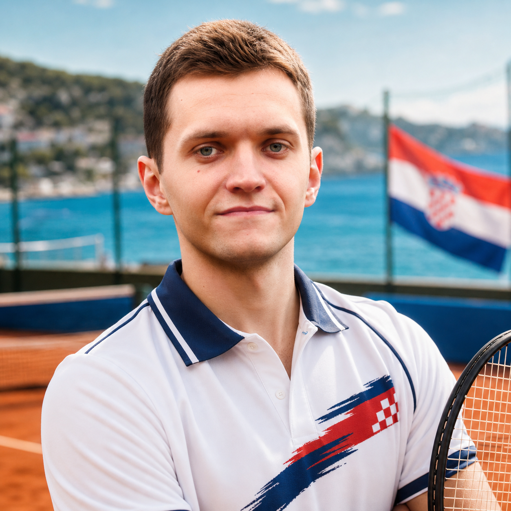

Featured Competitor
Petar Brljak
The Integration Cannon
Developer iz Integration tima, Petar donosi Ivanisevic-style servisnu energiju: miran pogled prije poena, pa jedan jak udarac koji odmah spoji sve komponente igre.
- RoleDeveloper
- Age26
- TeamIntegration Team
- GroupB
- Play StyleCroatian Serve Storm
- Signature MoveIntegration Ace
Scouting Report
Petar igra kao netko tko zna gdje se sustavi spajaju: brzo procijeni ulaz, poveze pravu putanju i servira rjesenje prije nego se protivnik poslozi.
Ivanisevic-inspirirani stil daje mu onu hrvatsku servisnu dramu, ali u team-building verziji: malo showa, puno fokusa i dovoljno samopouzdanja za hrabar drugi servis.
- Najopasniji je kad moze otvoriti poen jakim servisom i odmah zatvoriti prostor.
- Integration refleksi pomazu mu povezati nepovezane lopte u cistu kombinaciju.
- U Skupini B donosi mladu energiju i precizan tehnicki instinkt.
- Kad match postane kaotican, Petar trazi jednostavan endpoint i salje winner.
Agility8/10
Focus8/10
Serve9/10
Clutch8/10